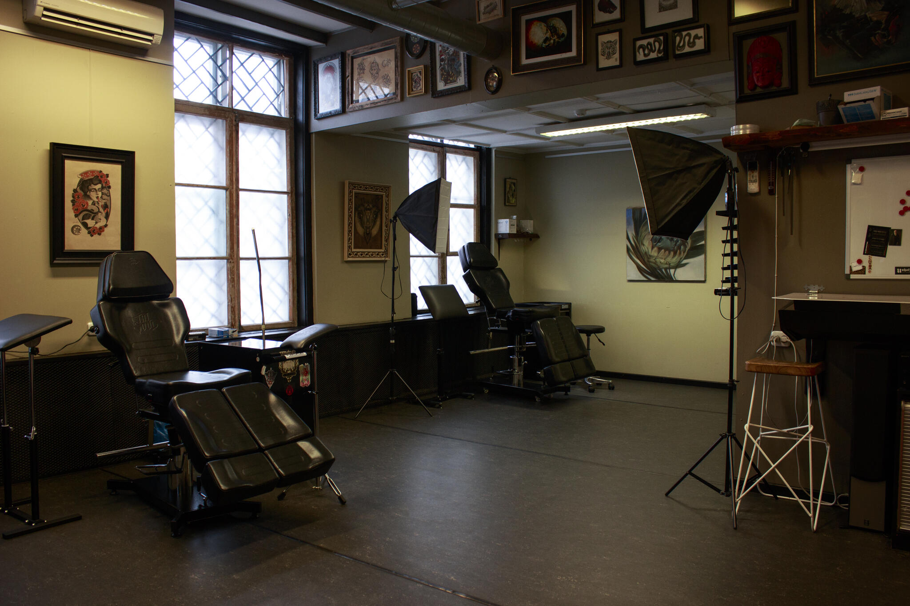

Alustasin tätoveerimist 2021. aasta sügisel . Kõigepealt käisin ühes stuudios praktikal ja seejärel tegelesin sellega veel aasta aega iseseisvalt. Lõpuks hakkasin tööle Backbone tattoo stuudios 2022. aasta augustis. Olen tegelikult kogu elu kaalunud tattoo artisti ametit. Juba 10-aastaselt lehitsesin tattoo raamatuid raamatupoodides, ent ostsin oma esimese masina alles 9 aastat hiljem tänu TikTokile. Nägin videot, kus inimene tätoveeris kunstnahka ning mõtlesin, et tahaks ka seda proovida. Kuigi ma kardan verd ja nõelu, siis tätoveerimise protsess seostub mul kunstiga, mitte meditsaiinilise protseduuriga. Hetkel teen ma graafilisi tätoveeringuid, kuid tulevikus tahaks jõuda stiili poolest neo traditional’ini. Ma armastan tätoveerida taimi ja loomi, näiteks pojenge ja liblikad. Olen huvitatud suurtemast projektidest. Mu tunnihind on 80€/h.
